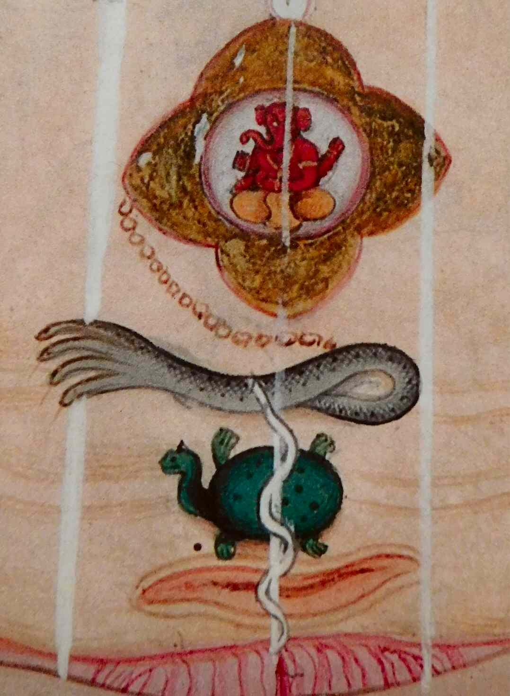

kundalini awakening
クンダリーニ
背骨の熱や体の動き、眠れない夜が続く。クンダリーニ覚醒について、インド伝統での位置づけ、体験を語る教師が挙げる症状と向き合い方、ユングやゴーピ・クリシュナの受容、クンダリーニ症候群をめぐる精神医学・医療の見方をたどります。

瞑想のあと、背骨の下から熱が上がる。体が勝手に動き、眠れない夜や急な感情の波が続くとき、その経験に名をつけようとして検索すると、「クンダリーニ覚醒」という言葉に行き着くことがあります。
この言葉には、インドの伝統における長い来歴があります。一方で、ある教師が語る激しい体験や対処の考え方があり、医療・精神医学の側からは慎重に見なければならない症状も記述されています。ひとつの説明だけに急がず、順にたどります。
クンダリーニ覚醒とは何か
インドの伝統では
サンスクリット語で「とぐろを巻いたもの」。脊椎のいちばん下（会陰）に、三回半とぐろを巻いた蛇の姿で眠っているとされる、生命のエネルギー——女神のエネルギー（シャクティ）——を指します。
この考え方は紀元前9〜7世紀のウパニシャッドに触れられ、8世紀のタントラ文献に現れ、9世紀にハタ・ヨーガに取り入れられ、15〜16世紀に専門用語として広まりました。
覚醒した蛇は、脊椎に沿った中心の管（スシュムナー）を上り、チャクラを通過しながら、頭頂の千の花弁の蓮華、サハスラーラへ達するとされます。そして、そこに住む「至高のシヴァ」と結ばれることが、解脱へ至る道として語られてきました。
ある教師は、この伝統を「尊敬している」と述べつつ、文献研究より自身の経験を中心に語っています。その立場は、次の言葉に表れています。
「私は本や文献ではなく、経験から教える。私自身が、とても過酷な、自然発生のクンダリーニ覚醒を経験したから」
「クンダリーニのエネルギーとは、あなた自身の、指数関数的な生体技術です。コンピューターの性能が二年ごとに倍になる、という話を知っていますか。クンダリーニは、あなたの意識の進化に、それをします。驚くほどの速さで加速する」
「ただ、逆説があります。それはあなた自身のエネルギーなのに、それ自身の生命と、知性を持っている。あなたの頭が理解できるよりはるかに知的で、創造的で、強い。ある伝統は、これを宇宙全体の中心の創造力と呼びます。核爆弾のような、と思ってください」
クンダリーニが起きる目的という説明
この教師は、起きる理由として三つを挙げ、その順序にも「順番が大事」と述べています。
1．癒しを加速するため
「過去のすべての傷、ブロック、無意識の信念を、表に押し出して癒す。何生涯もかかるはずのものを、一度に。自分のものだけでなく、先祖から受け継いだものまで」
2．意識を進化させるため
「なぜこれが大事かというと、意識が進化するほど、責任と倫理のある人になるから。それが三つ目のために要る」
3．魂の才能と力を広げるため
「インドの伝統はこれをシッディ（力）と呼びます。力が広がるのに、倫理がついてこないと、どうなるか」
力と倫理の関係を説明するため、この教師はヒンドゥーの伝統の話を引いています。木の下で楽師の音楽を聴き、恍惚の瞑想に入った若い僧が、雨が降り始めると力で雨を止めた。戻った楽師の前で瞑想を続けようとした僧は、年老いた僧から頬を打たれます。
「何をしている。何年も雨が降っていなかったのだ。私たちには、あの雨が要ったのだ」
この話に続けて、教師は次のように語っています。「力が広がるのは、自分のためではなく、人と地球に奉仕するためです。力だけを求めてクンダリーニ・ヨーガに通い、師を雇う人がたくさんいる。それは自我の理由です」
クンダリーニ覚醒の思い違い
クンダリーニ覚醒をめぐっては、恐れを強める説明も広がっています。この教師は七つの考えを挙げ、「これは何世代も続いてきた有害な神話で、恐れを生む」と述べています。
1．準備ができる前に覚醒させてしまうことがある
「覚醒させるのはあなたではありません。魂とハイヤーセルフが、時が来たと判断したときに、エネルギー自身が目覚める。魂が、準備できていないことをあなたにするでしょうか。過酷な覚醒を経験した人——私もそうです——が、それを『早すぎたのだ』と自我のレベルで解釈した。それがこの神話の出どころです」
2．自分で起こせる
「何千人もの人が何年もクンダリーニ・ヨーガをして、師を雇って、起きない。一方で私のように、クンダリーニという言葉も知らずに起きる人がいる」
3．制御できる
「頭がこの戦いに勝つことはありません。制御しようとすると、症状は悪化する」
4．止められる
「止めようとするのは制御の一形です。同じ理由で、悪化する」
5．一度の覚醒で悟る
「覚醒は単数ではなく複数、波で来ます。一波が来て、たくさんのことが起き、静まり、次の波が来る。エネルギー——女性のエネルギーです——は、あなたの体がどれだけ受け止められるかを、正確に知っている」
6．危険である
「『難しい』と『危険』は同じ言葉ではありません。魂の命令で起きるものが、あなたの生存を脅かす形で起きるとは、私には思えない」
7．師が要る
「私は師なしに、瞑想中に、自然に起きました。昔は仲介者が要ったのかもしれない。でも、いまは違う。私はあなたの師ではありません。あなたが、あなたの師です」
また、経験の有無を人の優劣に結びつけないことも、明確に述べられています。「クンダリーニ覚醒は、より価値のある人に起きるのではありません。私に起きて、あなたに起きていなくても、私があなたより優れているわけではまったくない」
背骨の熱と体の動きの体験
背骨の下で「ぽん」と外れたような感覚、熱、体の不随意な動きは、この教師が2014年の出来事として語った内容にも現れます。
「2014年、目覚めの一年目でした。ある本の練習——自分が選んだ師になりきる、頭のてっぺんから順に思い描いていく——をしていて、私はイエスを選びました。喉のあたりまで来たとき、体じゅうが痺れた。そして、背骨のいちばん下で、小さく『ぽん』と音がした。背骨が、ゆっくり、かすかに揺れはじめた。揺れは大きくなり、熱が背骨を上ってきて、腹の筋肉がひとりでに収縮しはじめた」
「私は理学療法士です。随意筋は、随意のはずです。止められない、ということが、臨床家の頭にはありえなかった。怖くなって、ガイドに助けを求めた。『目を開けなさい』という声がして、目を開けたら、世界が変わっていました。目の前を飛ぶ蠅の羽が、スローモーションで動いているのが見えた。色が鮮やかで、音が精密で、超人になった気がした。体の波は、何時間も止まらなかった」
「そこからの3、4か月が、目覚め全体を通していちばん過酷でした。体の内側から焼かれているようだった。夜中の3時に燃えるように熱くて跳ね起き、冷蔵庫の扉を開けて、冷気を浴びた。それだけが体系を静めた。皿を洗っていると前世の記憶が襲ってきた。山に登れそうな日の翌日は、階段が上れなかった。骨が、関節が痛んだ。至福と、源とのつながりを感じながら、同時に死にたいという考えが来た。意味が分からなかった。寝たきりのような日もあり、気が狂ったと思う日もあった」
クンダリーニ覚醒の十四の症状
この教師がまとめた十四の症状には、背骨の下から上へ向かうエネルギーの感覚、クリヤと呼ばれる体の不随意の動き、火や電気のような感覚が含まれます。
ほかに、数時間ごとに変わる極端な体力、突然の強い感情、前世の記憶、死にたいという考え、夜中に起きること、光や音への過敏さ、時間感覚の変化、恍惚や一体感、極端な体の痛み、人格の変化、深い目的への目覚めが挙げられています。
死にたいという考えについては、「自我が溶けるとき、自我が『死ぬ』と警報を出す」と説明されています。体の痛みについては、「一時的な病気の診断が出て、あとで消える人もいる」とも語られています。
引き金として挙げられるのは、目覚めの途中、ツインレイのような深いつながりとの出会い、瞑想やマインドフルネスを始めたときの三つです。「ただし、どれもなしに、突然起きることもある」
体の変化をこの言葉だけで判断しないことについて、教師自身は強く注意しています。
「症状の話に入る前に、強い注意を。強い体の症状があって医療が要ると感じるなら、行ってください。私は行かなかったかと聞かれますが、私は訓練を受けた臨床家で、自分が何をしているか分かっていた。あなたは同じ背景ではないかもしれない。クンダリーニは、一時的であっても病気を引き起こすことがある。医者に診てもらうことに、何も間違いはありません」
「医療が要ると感じるなら行ってください。私は臨床家だったから行かなかっただけです」
クンダリーニ覚醒で何をするか
この教師は、症状を押さえ込むのではなく、体の負担を見ながら経験に向き合うための七つの考え方を語っています。ただし、これは医療的な判断に代わるものではありません。
1．エネルギーと戦わない
「勝てない戦いです。戦えば抵抗が生まれて、症状は十倍になる。降伏して、彼女が行きたいところへついていく」
2．エネルギーと一緒に働く
「話しかけると、直観の形で答えてくる。何が要るか聞いて、それを与える」
3．体に優しく
「体は、経験したことのない加速を強いられている。よく食べ、休み、押さない。押すと病気になる」
4．体を動かす
「私の命を救ったのはこれです。燃えるような夜、暗い台所で音楽をかけて、ゆっくり踊った。動くほど、火が弱まった。激しくではなく、ゆっくり、円を描くように」
5．古い自分を手放す
「好みが変わる、仕事を変えたくなる、別人になる。しがみつく意味はない。古いあなたは、どのみち枯れていく。新しい人が何を好むのかに、好奇心を向ける」
6．裁かずに観る
「ガイドが見せてくれた像は、台風の目に座っている人でした。まわりは荒れているのに、目のなかは静か。前世の記憶も、強い感情も、人格の変化も、距離を置いて観る。観るほど、症状は速く通り過ぎる」
7．自然のなかにいる
「古い木、森。地に足がつくほど、エネルギーの動きは速く終わる」
おまけ：水を飲む
「1日2リットル以上。水は電気を通し、細胞が捨てるものを流す」
クンダリーニは西洋でどう語られたか
1932年 — 精神科医ユングはチューリッヒの心理学クラブで「クンダリーニ・ヨーガ」のセミナーを開きました。東洋思想を心理学的に理解し、内的経験の象徴的変容を考えるうえで画期的なものと見なされています。ユングはこの体系を高い意識へ向かう発達段階のモデルとして読み、その象徴を「個性化」の過程として解釈しました。
1955年 — インドのヨーガ行者ゴーピ・クリシュナが自身の経験を語り、この概念を西洋に広めました。「目覚めた生命エネルギーは道徳の母である。すべての道徳は、この目覚めたエネルギーから湧き出る」
神智学 — リードビーターは、このヨーガによってオーラの感知やアカシック・レコードの過去視などの「透視力」を得たと主張しました。
近代インドにおける受け止め方には、別の流れもあります。ヨーガ史を研究したマーク・シングルトンによれば、ハタ・ヨーガやクンダリーニ・ヨーガは「望ましくない、危険なもの」として避けられてきたとされます。
ヴィヴェーカーナンダ、オーロビンド、ラマナ・マハルシといった近代の聖者たちは、ラージャ・ヨーガやバクティ・ヨーガのような精神の鍛錬を論じ、クンダリーニのヨーガを「危険か浅薄なもの」として扱った、と日本語版ウィキペディアの項目は紹介しています。ある側では「危険ではない、難しいだけだ」と語られ、近代インドの師たちは「危険だから避けた」とした。この両方の見方が伝えられています。
クンダリーニ症候群と精神医学
クンダリーニ症候群
トランスパーソナル心理学と臨死研究の分野では、クンダリーニの概念と結びつけられる「感覚、運動、精神、感情の複雑な症状の型」が記述され、これをクンダリーニ症候群と呼んでいます。筋肉運動、知覚、精神的な体験の変化に関わるものとして、「生理的クンダリーニ症候群」と呼ぶ研究者もいます。
日本語版ウィキペディアの項目は、クンダリーニ覚醒によるとされる現象が精神疾患に類似する場合があり、精神衛生の専門家でも見分けることが難しいとしています。施設に収容されている統合失調症の患者の25〜30%がクンダリーニ現象を経験したと推定する研究がある一方、自然発生の覚醒と、神経症から精神病に至る「数えきれない」精神の疾患との関連も主張されています。
研究者の巻口勇一郎は、ほかの病気にも見られる症状を、自分でクンダリーニ症候群だと思い込むケースが多いと述べています。その逆に、クンダリーニ症候群であるのに精神病と誤診されるケースがある、という意見もあります。2021年には、日本トランスパーソナル心理学／精神医学会が、宗教的覚醒と精神病、クンダリーニ症候群をテーマにしたシンポジウムを開いています。
英語版ウィキペディアの項目は、クンダリーニ覚醒に伴う「スピリチュアル・エマージェンシー」が、その文化に通じていない精神科医から急性の精神病エピソードと見なされうると記しています。また、ある種のヨーガの実践による生物学的な変化が、急性の精神病につながることがあるともされています。
ここには、少なくとも三つの見方があります。経験を危険ではないものとして受け取る見方、近代インドの師たちが「危険だ」として距離を置いた見方、そして「精神病と区別がつかない場合があり、実際に精神病を引き起こすこともある」とする精神医学の見方です。体や心の変化を考える際には、この三つ目を見落とさないことが重要です。
近い言葉と関連するページ
- アセンション — 「アセンション症状」の一覧には、ここで挙げた十四の症状と重なる部分があります。別のページでは、「スピリチュアル・クライシス」についても扱っています
- 覚醒 — この分野で「クンダリーニ覚醒は、目覚めの下位の過程」と呼ばれているものです。別のページで扱っています
- チャクラ — 蛇が上っていくとされる中心です。別のページで扱っています
- 魂の暗夜 — 目覚めの途中にある深い落ち込みです。別のページで扱っています
- 邪気とサイキックアタック — 「金縛り」について、夜中に起きる症状の医学の側の名前も含めて扱っています。別のページで扱っています
このページで、いちばん大事なこと。
十四の症状には「死にたいという考え」が含まれ、それを「よくあることで、観察して、流して、恐れなくていい」と語る説明があります。その言葉は、そのまま受け取らないでください。死にたいという考えが続いているなら、それがクンダリーニによるものと感じられていても、そうでなくても、いま人に話してください。「よりそいホットライン」（0120-279-338）は24時間、「いのちの電話」（0570-783-556）は毎日10時から22時まで、つながります。上の教師自身も、その時期に「気が狂ったと思う日」があったと語っています。ひとりで台風の目に座り続ける必要はありません。
体の症状にも、医療的な確認が必要な場合があります。眠れない夜が続く、燃えるような熱がある、筋肉が勝手に動く、関節が痛む、体力が一日で切り替わるといった変化には、甲状腺、神経、感染症、自己免疫の検査で分かることがあります。
心の変化についても、精神医学は「クンダリーニ症候群と精神病は、専門家でも区別が難しい」としています。時間の感覚の変化、感覚の過敏さ、自分が別人になったような感覚、前世の記憶が襲う感覚が何週間も続き、生活が回らない状態は、精神科で相談が必要な状態です。それは「覚醒を止める」ことと同じではありません。上で紹介した「観る」「体に優しく」「水を飲む」「自然のなかにいる」という考え方は、受診のあとにも並行して置くことができます。
出典・参考
- Christina Lopes, What Is A Kundalini Awakening REALLY? [Top 7 Myths Debunked!]（YouTube）定義、三つの目的、若い僧の話、七つの思い違い。引用は自動生成の字幕による
- Christina Lopes, Top 14 Kundalini Awakening Symptoms! [Do YOU Have These?]（YouTube）2014年の自身の経験、三つの引き金、十四の症状、七つの方法、医療機関にかかることについての言葉。引用は自動生成の字幕による
- Kundalini（英語版ウィキペディア）語源と来歴（ウパニシャッド、ハタ・ヨーガ）、ゴーピ・クリシュナ（1955）、ユングの1932年のセミナー、「クンダリーニ症候群」
- クンダリニー（日本語版ウィキペディア）ナート派の身体論、近代インドの聖者たちがこのヨーガを避けたこと、クンダリニー症候群と精神疾患との区別の難しさ
関連することば
 astral projection / out-of-body experienceアストラルトラベル眠り際に体が動かず、天井近くから自分を見た気がした。幽体離脱とは何かを、この分野の実践者の言葉、神経科学者・心理学者による体外離脱の説明、研究者ディーン・シールズの文化研究を引きながら整理します。戻れない不安、眠りや金縛りとの関係、5段階の方法と注意点、生霊・あくがるも解説します。
astral projection / out-of-body experienceアストラルトラベル眠り際に体が動かず、天井近くから自分を見た気がした。幽体離脱とは何かを、この分野の実践者の言葉、神経科学者・心理学者による体外離脱の説明、研究者ディーン・シールズの文化研究を引きながら整理します。戻れない不安、眠りや金縛りとの関係、5段階の方法と注意点、生霊・あくがるも解説します。 ascension / 5Dアセンション疲れが抜けず、動悸や人間関係の変化が気になる。アセンション症状とは何かを、解説動画の語り手が挙げる六つ・31の変化、並木良和や考古天文学者アンソニー・アヴェニの言葉、精神医学の見方とともにたどり、5次元や地球変容の語りの来歴、受診が必要な症状との線引きを整理します。
ascension / 5Dアセンション疲れが抜けず、動悸や人間関係の変化が気になる。アセンション症状とは何かを、解説動画の語り手が挙げる六つ・31の変化、並木良和や考古天文学者アンソニー・アヴェニの言葉、精神医学の見方とともにたどり、5次元や地球変容の語りの来歴、受診が必要な症状との線引きを整理します。 ascendant / rising signアセンダント自分の星座より、周囲から受け取られる印象のほうがしっくりくる。アセンダント（上昇宮）とは、生まれた瞬間に東の地平線にあった星座で、第一印象や世界との接点としてどう捉えられるのかを解説します。CHANIとウィキペディアの説明を引き、太陽・月との違い、出生時刻と出生地が必要な理由、ビッグスリーでの位置づけを紹介します。
ascendant / rising signアセンダント自分の星座より、周囲から受け取られる印象のほうがしっくりくる。アセンダント（上昇宮）とは、生まれた瞬間に東の地平線にあった星座で、第一印象や世界との接点としてどう捉えられるのかを解説します。CHANIとウィキペディアの説明を引き、太陽・月との違い、出生時刻と出生地が必要な理由、ビッグスリーでの位置づけを紹介します。 affirmationsアファメーション「私は豊かだ」「私は愛されている」と毎朝唱えている。でも、唱えるたびに、嘘をついている気がする。効いているのか、逆効果なのか。この分野で「これを先に身につけないと効かない」と言われている一つのこつと、38の言葉。この言葉の来歴（1910年、1984年）、日本語の「言霊」、そして心理学が2009年に見つけた「効く人と、逆効果になる人」の違い。
affirmationsアファメーション「私は豊かだ」「私は愛されている」と毎朝唱えている。でも、唱えるたびに、嘘をついている気がする。効いているのか、逆効果なのか。この分野で「これを先に身につけないと効かない」と言われている一つのこつと、38の言葉。この言葉の来歴（1910年、1984年）、日本語の「言霊」、そして心理学が2009年に見つけた「効く人と、逆効果になる人」の違い。 how to pray祈り方祈りたいのに、誰に何を言えばいいのか分からない。祈りを「宇宙との対等な会話」と語るこの分野の教師の言葉から、言葉の置き方や手を合わせる形をたどり、日本語版ウィキペディアの記述とコクラン総説などの研究が示す範囲を整理します。
how to pray祈り方祈りたいのに、誰に何を言えばいいのか分からない。祈りを「宇宙との対等な会話」と語るこの分野の教師の言葉から、言葉の置き方や手を合わせる形をたどり、日本語版ウィキペディアの記述とコクラン総説などの研究が示す範囲を整理します。 inner childインナーチャイルド恋愛で、相手の一言に急に黙り込んでしまう。インナーチャイルドを手がかりに、幼少期の安心感と親しい関係での反応のつながりを整理します。精神科医・相澤雅子、心理カウンセラー・衛藤信之、心理学者ニコール・ルペラらの語りを引き、向き合い方、心理療法との重なり、科学的な限界まで解説します。
inner childインナーチャイルド恋愛で、相手の一言に急に黙り込んでしまう。インナーチャイルドを手がかりに、幼少期の安心感と親しい関係での反応のつながりを整理します。精神科医・相澤雅子、心理カウンセラー・衛藤信之、心理学者ニコール・ルペラらの語りを引き、向き合い方、心理療法との重なり、科学的な限界まで解説します。